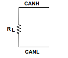
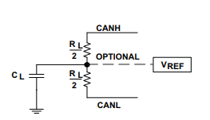

9.2. FAQ - CAN¶
9.2.1. What is CAN?¶
CAN is: - a multi-master broadcast serial bus standard for connecting electronic control unit - a serial asynchronous bus protocol, message-based protocol designed automotive applications but also used for industrial applications. - a differential pair signal and could be twisted without issue.
9.2.2. How is bit-rate calculated?¶
Formula for bit-rate is:
Sampling Point(%) = (1 + TSEG1) / (1 + TSEG1 + TSEG2)
TSEG1, TSEG2: Time Segments expressed in terms of number of Tq(Time Quantum)
Tq: the period of the CAN module functional clock.
9.2.3. What is CAN bus termination?¶
CAN bus termination is needed to minimize the reflection, to reduce the noise. The transmission lines must be terminated to make sure noise does not cause communication failure.
There are two types of CAN termination:
- Standard termination:
The traditional 120 Ohm resistor(RL) is used on each end of the bus as shown in the following figure.

- Split Termination
Two 60 Ohm(RL/2) resistors along with capacitor(CL) is used to suppress the noise at both ends of the bus. Typical value of CL for 1.1 Mbps is 4.7 nF. It is shown in the following figure

Note
RL and CL values are dependent on a signaling rate.
9.2.4. What is Transceiver Delay Compensation Value(TDCV) and how is it calculated?¶
CAN is a broadcast protocol, every node on the bus sees the message on the bus even if it is Tx node. Tx node uses this data on Rx line for integrity and error checks locally. Overview of bit flow through different stages in communication is:
CAN module core -> CAN module Tx line -> SoC Tx Pin/PAD -> Transceiver Out -> CAN Bus -> Transceiver In -> SoC Rx Pin/PAD -> CAN module Rx line -> CAN module core
Above whole path introduces latency between data going out from Tx line to data coming in on Rx line. Major part of this latency comes from Transceiver. Hence it is called Transceiver Delay Compensation Value. This needs to programmed as controller has to adjust it Secondary Sampling Point(SSP) for sampling Rx line at the correct time.
- MCAN provides functionality to measure delay between transition on Tx line and same transition for Rx line. User need not to measure transceiver loop-back delay or refer transceiver documentation for the same. User just needs to program SSP position which could same as Sampling Point(SP).
9.2.5. Things to consider/check before sending a message over CAN bus¶
Make sure following is done/checked before attempting communication on bus:
- ISO-11898 compatible transceivers have to be connected to a CAN bus.
- CAN bus should have proper termination.
- CAN_L lines from nodes shall be connected together and same goes for CAN_H and GND lines as well.
- Make sure all connections are firm and all pins properly connected.
- All node on the bus are configured for same bit rate.
- In case of CAN FD, make sure Transceiver Delay Compensation value is correctly programmed.
- CAN module is powered up and configured properly.
- SoC pins/PADs for CAN are configured properly.
9.2.6. CAN communication failed, where to start debug?¶
When any CAN message transmission/reception fails, controller updates LEC (Last Error Code) and DLEC (Data Phase Last Error Code) fields in status register(‘MCAN_PSR’ in case of MCAN and ‘DCAN_ES’ in case of DCAN)
LEC: this field is updated when error happened in arbitration phase in case of CAN FD message or during full message for classic CAN message. DLEC: this field is updated when error happened in data phase in case of CAN FD message.
LEC/DLEC fields have following errors:
Stuff Error
- Node type: Rx
- Description: More than 5 equal bits in a sequence have occurred in a part of a received message where this is not allowed.
- Check if all the nodes on the bus have same bit-rate.
Form Error
- Node type: Rx
- Description: A fixed format part of a received frame has the wrong format.
- This could happen if receiver node have drift in CAN functional clock momentarily or bus have interference.
Ack Error
- Node Type: Tx
- Description: The message transmitted by the MCAN module was not acknowledged by another node.
- CAN bus should have more than one nodes(apart for transmitting node) up and running(not in sleep or power down state).
Bit1 Error and Bit0 Error
Node Type: Tx
- Description:
- Bit1 Error: During the transmission of a message (with the exception of the arbitration field), the device wanted to send a recessive level (bit of logical value 1), but the monitored bus value was dominant.
- Bit0 Error: During the transmission of a message (acknowledge bit, active error flag, or overload flag), the device wanted to send a dominant level (data or identifier bit logical value 0), but the monitored bus value was recessive.
Tx and Rx lines are sampled at Sampling Point (SP) and Secondary Sampling Point (SSP) respectively have different values. Position of SSP is configurable.
- This can happen in following cases:
Check if tx and rx pins are configured properly. These pins should be pulled high by default i.e. when bus is idle(no communication is going on).
Check if CAN transceiver is enabled.
- For LEC:
- If configured SP is too large for given node.
- Segment after SP(TSEG2) should be large enough to compensate for Transceiver Delay.
- For DLEC:
- Configured Transceiver Delay Compensation value is less/more than required.
CRC Error
- Node type: Rx
- Description: The CRC check sum of a received message was incorrect. The CRC of an incoming message does not match with the CRC calculated from the received data.
- This could happen if receiver node have drift in CAN functional clock momentarily or bus have interference.